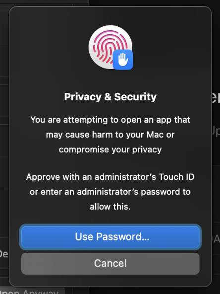

CUEY FOR INTEL MAC · EARLY ACCESS
Install Cuey in a few steps.
Keep this guide open while you install. You can read it offline or print it.
1. Move Cuey to Applications
Open the downloaded disk image. Quit any other Cuey copy, then drag Cuey onto Applications. Open Cuey from Applications, rather than running it from the disk image.
This download is for Intel Mac. Native Apple Silicon, Windows and Linux releases are not included. Live magnifier requires macOS 14 or later.
2. If macOS blocks the first opening
If the alert says Apple could not verify Cuey, choose Done. Leave this guide open for the next step.

3. Find Cuey in Privacy & Security
Open System Settings → Privacy & Security. Scroll to Security. After trying to open Cuey, its blocked-app message should appear here.
If you trust this copy, choose Open Anyway beside Cuey. You do not need to turn off Gatekeeper, FileVault, or other security protections.

The option can be time-limited or restricted on a managed Mac. Try opening Cuey again if the entry has disappeared. Contact your administrator if device policy blocks it.
4. Confirm in the Apple dialogs
Read the confirmation. If you still want to open the trusted download, choose Open Anyway or Open, as shown by your macOS version.

macOS may ask for an administrator’s Touch ID or password. Enter it only in the macOS system dialog. Never send a password to Cuey support. The order of these prompts can vary.

If the warning is different, stop
If macOS says the app will damage your computer, detects malware, or says files are damaged or modified, do not follow these opening steps. Delete that download and contact support with the exact alert text.
5. Choose the tools you need
Follow Cuey’s quick start. Optional tools request access when needed:
- Screen Recording: live magnifier and desktop capture.
- Camera: presenter webcam.
- Input Monitoring: shortcut HUD across other apps.
You can review these later in Cuey Settings → Permissions & setup. Follow any macOS quit-and-reopen instruction. Ghost mode does not grant permissions.
Keychain prompts and updates
Cuey keeps license credentials and trial history in your Mac’s protected Keychain. A recognized Apple Keychain prompt is separate from this installation warning. An older Cuey copy may need authorization after an update; this release does not promise prompt-free migration.
Open Settings → General → App updates to check for new releases. In Cuey 0.1.3, you can turn daily checks on or off. You choose when to download and install, then restart when ready.
The seven-day trial needs no card and never charges automatically. Activate a purchased license to keep using the app after the trial.